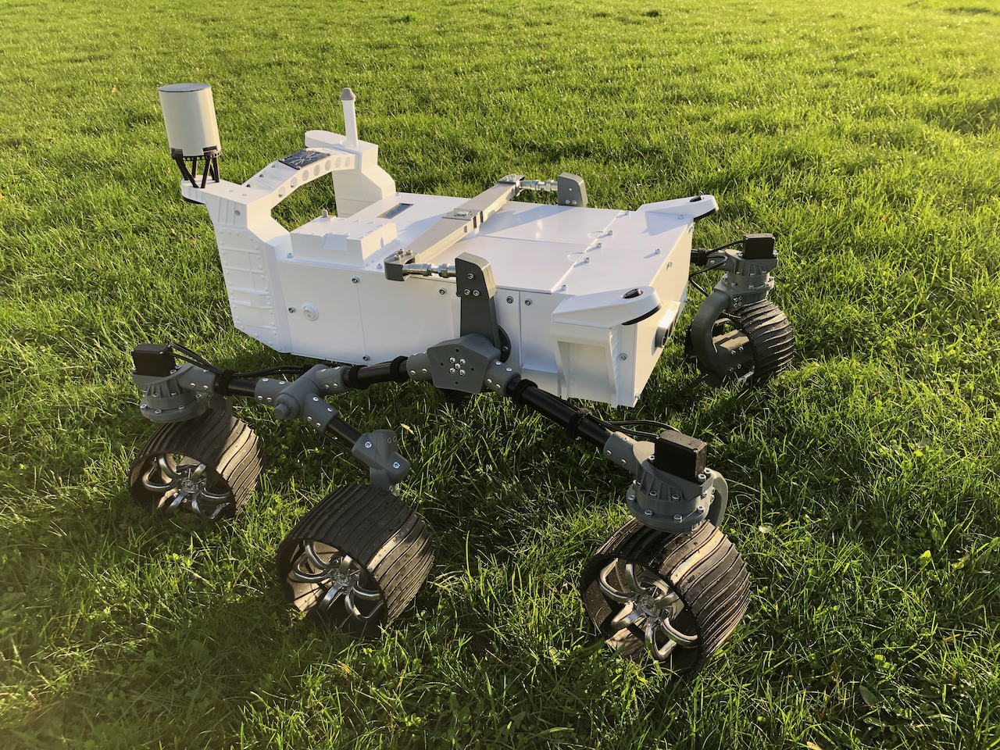
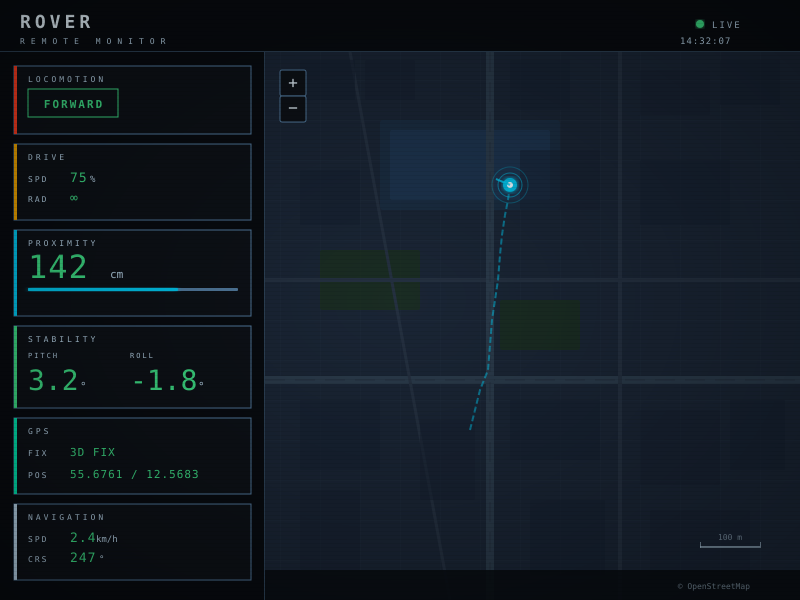
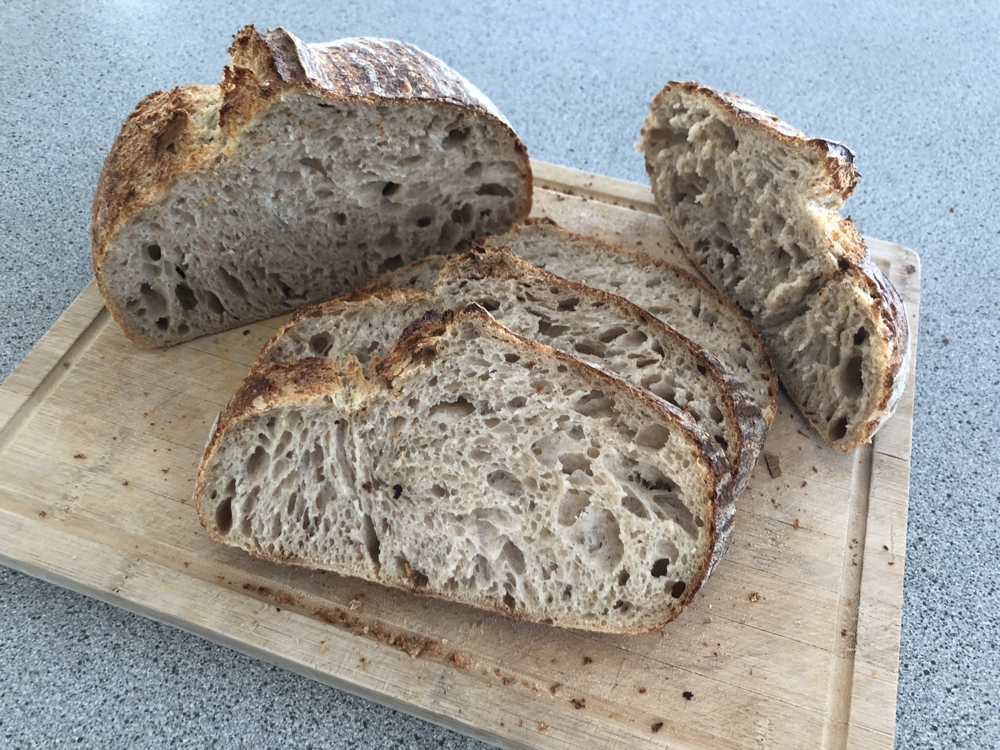

PROJECTS
CRAFTED BY HAND, GUIDED BY CURIOSITY

Rover
Autonomous robotics project with custom electronics and programming

Rover Monitor
Real-time telemetry dashboard for the Mars rover — live GPS, drive state, proximity and stability over WebSocket
WattZig
Open-source Zigbee power meter for 3-phase energy monitoring
Lamps
Custom lighting designs and fabrication
Kids Lamps
Fun and creative lighting projects for children's spaces

Sourdough
Artisanal bread making experiments